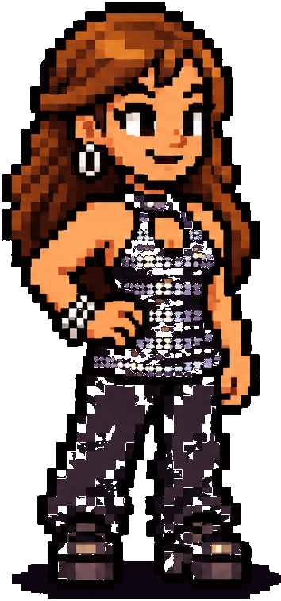

🎹 Arcade · Klavier, MIDI & Rhythmus · Pilot v0.5 – im Arcade-Hub startbar
Teil der isolierten Musikschul-Arcade: Julia und Tom üben gemeinsam · gemeinsame Tastatur für Noten und Rhythmus · keine Schülerkonten, keine Speicherung.
Piano ist hier zunächst eine eigene synthetische Annäherung, keine authentische Samplebibliothek. DX7 ist eine eigenständige FM-Klangannäherung, keine kopierten Yamaha-Presets.
MIDI: noch nicht verbunden · Auf iPad/Safari nicht nativ verfügbar.
Touch funktioniert ohne MIDI. MIDI-Noten C4–C5 werden unterstützt; angeschlossene Geräte mit eigenem Klang können App-Klang abschalten.
Beide Übungen verwenden dieselbe Bildschirmtastatur oder eingehende MIDI-Tasten. Der Eingabeklang bleibt Piano/DX7 umschaltbar.
Spiele die gesuchte Taste:
Audio aktivieren und Übung starten.
Für diesen technischen Test werden Notennamen angezeigt; echte Notenschrift und Lehrwerksfolge sind noch nicht verbunden. 10 Aufgaben, mindestens 8 richtig. Schwarze Tasten dienen zum Testen und werden als falsche Antwort gewertet, wenn eine weiße Note gefragt wird.
Rhythmus lesen und spielen – eindeutige Achtelpositionen
Jedes Feld ist genau eine Achtelposition (1 + 2 + 3 + 4 +); der gelbe Rahmen zeigt die gerade laufende Position. Nur bei einer dargestellten Note anschlagen. Zum Metronom auf irgendeiner Taste klopfen. Ausgewertet werden Anschlagszeitpunkte, keine gehaltenen Tondauern. Die Regel ist für Touch und MIDI identisch.
Wähle diesen Modus und starte die Rhythmusübung.
4/4-Takt · vier Einzählschläge · ±180 ms Test-Toleranz · MIDI-Note-On oder Touch. Eine kurze Abfolge wird nach jedem Durchgang gewechselt. Bewertung erfolgt ab dem musikalischen Zeitpunkt, nicht ab dem Klangbeginn.
Gemeinsame Touch-/MIDI-Tastatur
In beiden Modi dieselben Tasten: im Rhythmusmodus beliebige Taste anschlagen.
Die Web-MIDI-Verbindung setzt einen unterstützten Browser und Geräteberechtigung voraus. iPad benötigt später eine native Core-MIDI-Bridge. Kein Web-MIDI-Versprechen für Safari oder iPad-Chrome.